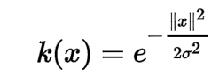
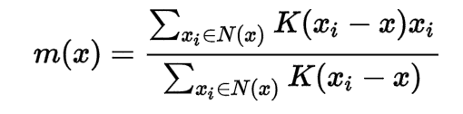
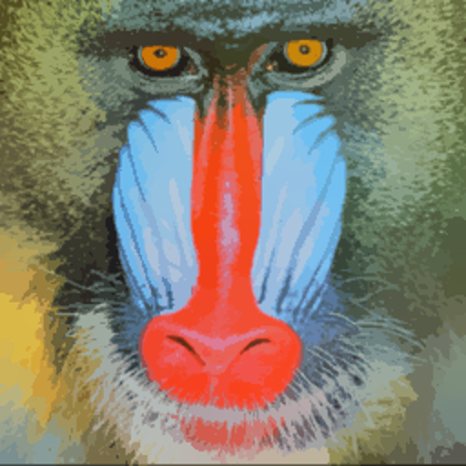
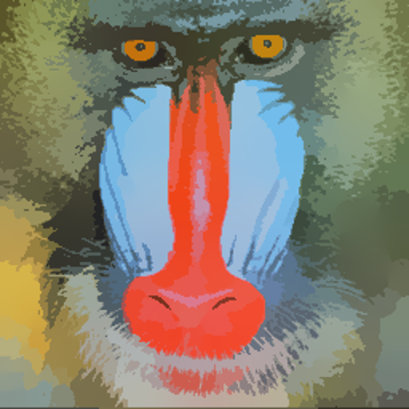
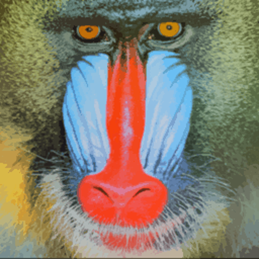
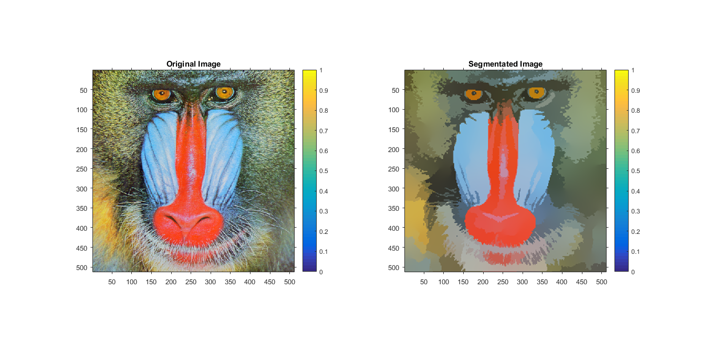

Image Segmentation using mean shift
Contents
Q2. Image Segmentation using mean shift
We take original Image , Then we do following operations:
- Smooth the image using Gaussian convolution.
- Subsample the image to half i.e. resize the image to half of the original size.
- Create the 5-D feature space for knnsearch.
- Use knnsearch for each point to find the k-nearest neighbors.(command : [ IDX, D ] = knnsearch(X,Y,'K',Value) )
- take the gaussian on the distances that we find using knnsearch as our kernel is gaussian:

- Compute the weighted mean :

Parameters taken:
- Gaussian kernel bandwidth for the color feature : 32
- Gaussian kernel bandwidth for the spatial feature : 12
- number of iterations = 20
Here we check for different values for pair of h_s and h_r i.e. Gaussian kernel bandwidth for the spatial feature = h_s and Gaussian kernel bandwidth for the color feature = h_r
Observation as follows :
- h_s increases, image will become more smooth
- h_r Increases, image will become more color mixing
1. (h_s,h_r) = (8,8)

2. (h_s,h_r) = (8,16)

3. (h_s,h_r) = (16,8)

myMainScript
tic; img=imread('../data/baboonColor.png'); % Gaussian Blur Iblur = imgaussfilt(img, 1); % subsample it to half of original sample = imresize(Iblur, 0.5); h_s = 12; h_r = 32; iterations = 20; % iterations to reach to convergence segment_image = myMeanShiftSegmentation (sample,h_s,h_r,iterations); % bring it to original size segment_image = imresize(segment_image, 2); % display/plot results figure('units','normalized','outerposition',[0 0 1 1]); subplot(1,2,1); imshow(mat2gray(img));colorbar; title('Original Image'); subplot(1,2,2); imshow(mat2gray(segment_image));colorbar; title('Segmentated Image'); % store the image imwrite(mat2gray(segment_image),'../images/segmented_baboonColor.png'); toc;
Elapsed time is 47.801232 seconds.